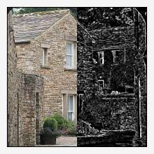
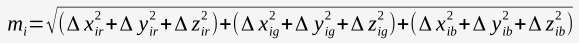
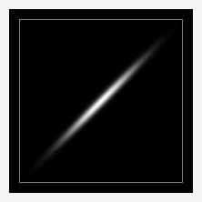
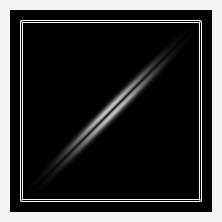

This command replaces each pixel in an input image with the Euclidean measure of the vector composed of the gradients in the width (x), height (y) and depth (z) directions, as measured from the pixel, in each channel of the image.
For a three channel RGB image, the vector has nine components, three for each x, y and z direction in each channel:

The command renders in white or light gray to a single channel grayscale output image rapid transitions of intensity among each of the various channels of the input image. It is particularly sensitive to edges, but it is not limited to edge detection.
The command takes the form:
-gradient_norm
and has no parameters.
|  |  | |
| This greyscale image of an engolated Gaussian illustrates a number of transitions, from the inpulses of the gray border to a variety of transitions of abrupt and gradual nature in the Gaussian itself. | Gradient_norm reports on how rapidly an intensity is changing in at least one channel of an original image. Note how the border has become a double line; gradient_norm is sensitive to both the transition from black to grey and grey to black. Similarly, the Gaussian has become a pair of parallel marks, recording the relatively rapid transitions both to and from the Gaussian's peak. | This is a graph of the middle horizontal section of images one (red) and two (green). The intensity of the pixels in the second image are a function of the change in intensity of the first image. The local maxima of the gradient norm correspond with inflection points of the changing intensities of the first image. The local minima of the gradient norm correspond with local maxima and minima in the original image. |
Image: Askrigg Archway, Askrigg, North Yorkshire, England. Photograph by Kreuzschnabel, Wikimedia Commons
Garry Osgood